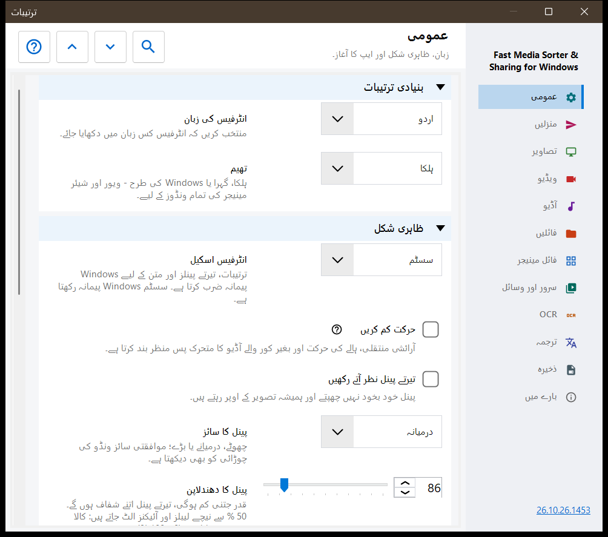
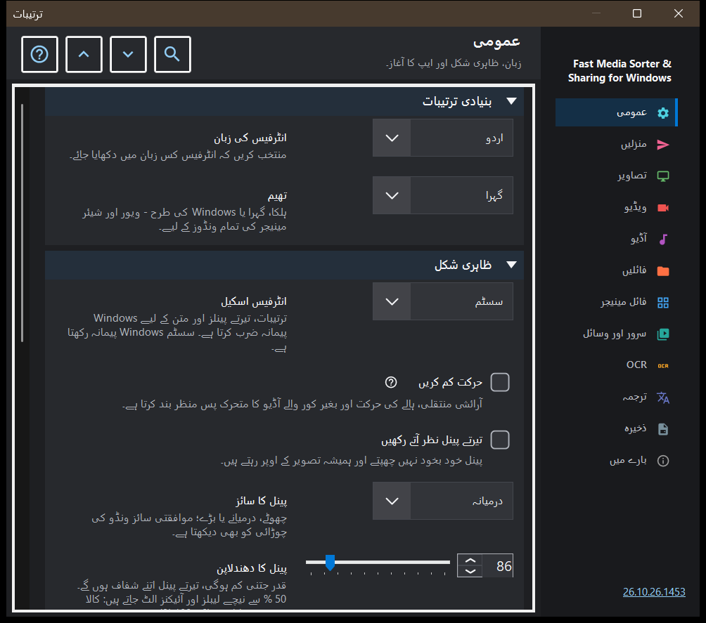

ترتیبات
ترتیبات
یہ کس مقصد کے لیے ہے
ترتیبات کی ونڈو میں ویور کے تمام اختیارات ہیں۔ یہ F2 دبانے سے، ٹول بار کے ترتیبات بٹن سے، یا تصویری پینل کے فائل مینیجر میں ترتیبات.. بٹن سے کھلتی ہے؛ یہ بٹن سیدھا فائل مینیجر کے صفحے پر لے جاتا ہے۔ صفحات دائیں جانب سائڈبار میں فہرست کی صورت میں ہیں، اور صفحے کے گروپس کو سمیٹا جا سکتا ہے۔


اس ترتیب میں
- سائڈبار میں کوئی صفحہ منتخب کریں، یا کسی اختیار کو تلاش کرنے کے لیے ترتیبات تلاش کریں میں کوئی لفظ لکھیں۔
- صفحے کے تمام گروپس کھولنے یا سمیٹنے کے لیے سب کھولیں اور سب سمیٹیں استعمال کریں۔
- جو اختیارات درکار ہوں انہیں بدلیں۔
- ونڈو بند کرنے کے لیے Esc دبائیں۔
عناصر
عمومی
زبان اور تھیم (تھیم)، پھر تیرتے پینلز کی شکل: انٹرفیس اسکیل، حرکت کم کرنا، پن کرنا، سائز، دھندلاپن، کونے، تصویر کے اوپر معلومات اور ماؤس کرسر چھپانا؛ پینل ان کی جگہ پر واپس کریں کا بٹن منتقل کیے گئے تمام پینلز کو ان کی معمول کی جگہ پر لوٹا دیتا ہے۔ آغاز گروپ طے کرتا ہے کہ شروع میں کیا ہو (شروع میں کھولنا، آخری فائل سے جاری رکھنا، نئی ونڈوز کی اجازت دینا)، اور اس میں خوش آمدید کے مراحل دوبارہ دکھائیں ہے جو ابتدائی سیٹ اپ کو دوبارہ کھولتا ہے۔ اضافی ترتیبات گروپ اضافی ترتیبات کو برآمد اور درآمد کرتا ہے اور پہلے سے طے شدہ قدریں بحال کرتا ہے۔
منزلیں
وہ دس فولڈرز جن میں کلیدیں 1-9 اور 0 فائل کو منتقل کرتی ہیں؛ اوپر کی قطار کے ہندسے کے ساتھ Shift اسی فولڈر میں نقل کرتا ہے۔ ٹیبل میں ہر کلید کے لیے ایک قطار ہے: کوئی قطار منتخب کریں، پھر اس پی سی پر ایک فولڈر..، وسائل (SFTP یا SMB فولڈر) یا صاف کریں استعمال کریں، یا قطار پر کوئی فولڈر کھینچ کر چھوڑ دیں۔ منزل ٹیبل کی شکل گروپ تصویر کے اوپر دکھائے جانے والے ٹیبل کی جگہ، چوڑائی، متن کا سائز، دھندلاپن اور نظر آنے والی قطاریں طے کرتا ہے، اور تصویر پر منزل ٹیبل اس ٹیبل کو چالو یا بند کرتا ہے۔
تصاویر
تصاویر کیسے کھلتی اور کیسی دکھائی دیتی ہیں: نئی تصویر کا پیمانہ، EXIF ٹیگ کے مطابق خودکار گھماؤ، ماؤس وہیل سے زوم، ویڈیو پلیئر کے ذریعے اینیمیٹڈ گرافکس، اور تصویر کے سائز، فائل کے سائز اور تاریخ کی معلومات۔ تصویر کا پس منظر گروپ تصویر کے گرد رنگ، تناظری پس منظر اور ہالہ (متحرک، اینیمیٹڈ، رفتار) طے کرتا ہے۔ سلائیڈ شو کا رویہ گروپ وقفہ، بے ترتیب ترتیب، یہ کہ دستی نیویگیشن شو کو روکتی ہے یا نہیں، اور شو کے دوران انٹرفیس کیا کرتا ہے، طے کرتا ہے۔ اضافی حصے میں معیاری اسکیلنگ اور تھمب نیل کارڈ کا سائز ہے۔
ویڈیو
ویڈیو فائلیں براؤزنگ میں شامل ہوں یا نہیں، خودکار پلے، کلپ کے اختتام پر عمل، مقام یاد رکھنا اور مشترک آواز: آڈیو اور ویڈیو۔ آگے کے گروپس میں پسندیدہ آڈیو اور سب ٹائٹل زبانیں اور پلے بیک کنٹرول ہیں: ایک کلک کیا کرتا ہے، کنٹرولز کی تاخیر، توقف پر کنٹرولز اور سیک کے تین مرحلے۔
آڈیو
آڈیو فائلیں براؤزنگ میں شامل ہوں یا نہیں، ٹریک کے اختتام پر عمل، پہلے سے طے شدہ آواز اور بغیر آواز کے آغاز۔ معلومات اور کنٹرول گروپ میں ہمیشہ نظر آنے والا آڈیو بار، بغیر سرورق والی فائلوں کے لیے ویژولائزر اور سلیپ ٹائمر ہے۔
فائلیں
فائلوں کا انتظام: نقل کے بعد اگلی فائل پر جانا، نام ٹکرانے پر اور نقل یا منتقلی کے بعد کیا ہو، فائل آپریشنز پر اسٹیٹس بار، غائب منزل فولڈر بنانا، ری سائیکل بن میں حذف کریں اور حذف کی تصدیق۔ فائل اقسام گروپ میں ذیلی فولڈرز، ایکسٹینشنز، دستاویزات، متن کے پیش منظر کا سائز اور دیگر فائلیں ہیں۔ آگے کے گروپس حالیہ فائلیں اور فولڈرز، آرکائیو کی حدیں اور محفوظ .fd-sec فائلیں طے کرتے ہیں۔ کلیدیں اور وابستگیاں گروپ میں کی بورڈ شارٹ کٹس بٹن ہے جو ہاٹ کیز کی ونڈو کھولتا ہے، اور تصاویر و ویڈیو کے لیے فائلوں کی وابستگیاں ہیں۔
فائل مینیجر
تصویری پینل کے فائل مینیجر کے اختیارات: ڈسپلے موڈ (ٹائلیں یا فہرست)، مواد کا فلٹر، پوشیدہ فائلیں اور غیر میڈیا فائلوں کے لیے عمل۔ مقامات گروپ طے کرتا ہے کہ کون سے مقامات دکھائے جائیں (مقامی، وسائل، آلات)، اور اس میں چھانٹی یاد رکھیں ہے۔
سرور اور وسائل
سرورز اور نیٹ ورک فولڈرز فہرست میں وہ SFTP اور SMB وسائل ہیں جنہیں ویور براؤز کر سکتا ہے اور منزل کے طور پر استعمال کر سکتا ہے۔ Android / SFTP گروپ اس پی سی کے فولڈرز کو SFTP کے ذریعے Android ایپ کے لیے شائع کرنے کے لیے ہے؛ اس میں کنکشن گائیڈ اور Android کلائنٹ کے لیے SFTP سرور کا انتظام کریں.. بٹن ہے۔ تبادلہ سرور کے ہر اندراج میں، جب تک وہ جڑا ہو اور اس کا سرور سیٹنگز کا معیار رکھتا ہو، معیار کے طور پر محفوظ کریں.. اور معیار پڑھیں.. بٹن ہوتے ہیں: پہلا نشان زدہ سیٹنگ گروپس کو سرور پر آپ کے اکاؤنٹ کے معیار کے طور پر محفوظ کرتا ہے، دوسرا نشان زدہ گروپس کی قدریں اس کمپیوٹر پر لاتا ہے۔ راستے، پاس ورڈ، کلیدیں اور ونڈو کے سائز اسی کمپیوٹر پر رہتے ہیں، سرور کا آپریٹر معیار پڑھ سکتا ہے، اور یہاں بعد کی تبدیلیاں مقامی رہتی ہیں جب تک آپ دوبارہ معیار نہ پڑھیں۔
OCR
OCR فعال کریں متن کی شناخت کو چالو کرتا ہے، اور خودکار چلائیں اسے خود بخود چلنے دیتا ہے۔ متن کی شناخت گروپ ماخذ زبان، معیار، موڈ اور زبان کے ڈیٹا کی ڈاؤن لوڈ طے کرتا ہے۔
ترجمہ
سروس (ترجمے کی سروس) اور ہدف زبان (ترجمے کی زبان) منتخب کریں؛ دیگر خانوں میں سروس کا پتہ، مقامی Ollama سرور، ماڈل اور API کلید ہیں۔ تصویر پر ترجمہ گروپ تصویر کے اوپر ترجمے کے پینل کا دھندلاپن اور نمائش طے کرتا ہے۔
ذخیرہ
ہر کیش کے لیے صاف کریں بٹن کے ساتھ کیش کی حدیں: ڈی کوڈ شدہ تصاویر، تصویری پینل کے تھمب نیلز، آرکائیوز اور نیٹ ورک وسائل۔ ڈسک پر OCR کیش میں نتائج ڈسک پر محفوظ کریں، اس کی اپنی حد اور صاف کریں بٹن ہے۔
بارے میں
پروڈکٹ کی معلومات اور لنکس: اپ ڈیٹس، ترتیبات دوبارہ ترتیب دیں، متعلقہ پروجیکٹس، پروگرام کی مدد، سائٹ، GitHub، ریلیزز، رازداری کا صفحہ، MIT لائسنس اور تھرڈ پارٹی نوٹسز۔ لاگز مصنف کو بھیجیں رضامندی کی ایک ونڈو دکھاتا ہے جس میں درج ہوتا ہے کہ آرکائیو میں کیا جائے گا، پھر آرکائیو آپ کے میل پروگرام کے حوالے کر دیتا ہے؛ پروگرام اس کے لیے کوئی نیٹ ورک کنکشن نہیں کھولتا۔
دستاویزات
ترتیب کے فلٹر سے الگ PDF ریڈر فعال کریں۔ ایک صفحہ، مسلسل اسکرول یا دو صفحات، رنگ، زوم، تلاش اور کیش کی حد منتخب کریں۔ صفحہ بٹن صفحات اور فائل بٹن فائلیں بدلتے ہیں۔ متن کے کنٹرول B/N، اعداد اور Delete لیتے ہیں؛ Esc منظر پر واپس لاتا ہے۔ ظاہری شکل بحال کرنے پر مقام اور نام والے بک مارکس رہتے ہیں۔ بلند آواز میں پڑھنا نصب شدہ Windows آوازیں استعمال کرتا ہے۔ پاس ورڈ سیشن میں رہتے ہیں۔ مقامی عارضی نقل اصل فائل منتقل کرنے دیتی ہے۔ عام برآمد میں پڑھنے کی تاریخ، بک مارکس اور ہر دستاویز کی ظاہری ترتیب شامل نہیں۔ ٹیکسٹ فائلوں کے اپنے گروپ ہیں۔ «ٹیکسٹ فائلوں کا مکمل مطالعہ» انہیں فونٹ، تھیم، سطر نمبروں اور تلاش کے ساتھ کھولتا ہے؛ ترمیم کی حد سے بڑی فائل حصوں میں پڑھی جاتی ہے۔ «ٹیکسٹ فائلوں کی ترمیم» Ctrl+E شامل کرتی ہے: محفوظ کرنے سے انکوڈنگ نہیں بدلتی اور غیر محفوظ تبدیلیاں ایک خفیہ کردہ مسودے میں رہتی ہیں۔ فائل کے مینو میں «متن کے طور پر کھولیں» کسی بھی دوسری فائل کو متن کے طور پر دکھاتا ہے۔ «ٹیکسٹ فائلوں کا ترجمہ» دستاویز پینل میں doc-html-translate بٹن شامل کرتا ہے: منتخب متن یا ایڈیٹر کا پورا متن ایک نقل کے طور پر جاتا ہے، فائل نہ محفوظ ہوتی ہے نہ بدلتی ہے، اور صفحہ براؤزر میں کھلتا ہے؛ محفوظ شدہ فائل بھی بھیجی جا سکتی ہے۔ doc-html-translate گروپ PDF اور EPUB کے doc-html-translate بٹن سے پوچھواتا ہے کہ دستاویز کا کیا کرنا ہے: صفحہ براؤزر میں کھول کر وہیں ترجمہ کرنا، صرف تبدیل کرنا، اپنے مقامی Ollama ماڈل سے ترجمہ کرنا یا یہاں طے کی گئی خرچ کی حد کے اندر Google سے ترجمہ کرنا؛ ہر ادا شدہ رن پہلے منظور ہوتا ہے۔ ہر رن ویوئر کے کیش میں اپنے الگ فولڈر میں چلتا ہے، کبھی دستاویز کے ساتھ نہیں؛ صفحہ براؤزر میں یا دستاویز کے اوپر کھلتا ہے، اور دستاویز پینل کا نتیجہ مینو اصل کھولتا ہے، نتیجہ محفوظ کرتا ہے یا دستاویز کو دوبارہ پروسیس کرتا ہے۔